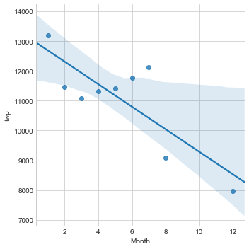

Overall Call Frequency
The graph to the right displays the overall 911 call frequency for Montgomery County, PA for the dates of 12/10/2015-8/24/16. Through analysis the spike around the first of the year in 2016 could be a result of a historic blizzard that passed through Montgomery County, PA between Jan 22, 2016 & Jan 24, 2016, and according to the NWS (National Weather Service) dumped a record breaking 32"-36" inches of snow. If that didnt cause the spike it is safe to say that all residents in Montgomery County like to party!

Relationship of Call Volume Overtime
Created a a scatter plot with a linear regression line to determine if there is a correlation between the month the call to 911 was placed over the timespan of one year.
There does appear to be a decrease in 911 call volume over the year, however it is hard to say with absolute certainty that the relationship is linear. In my opinion, I can say with certainty that there is not a linear relationship, but the 911 call volume is decreasing over time.